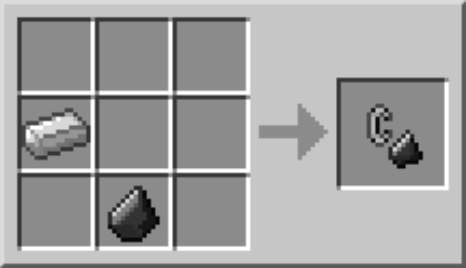

Flint and Steel
Description
Flint and steel is a tool used to light fires.
Flint and steel is very versatile as it can be used for many things.
It can be used to prime TNT in order to cause it to explode.
Also, it lights the Nether Portal.
Ingredients
Steps
- Open the default crafting menu
- Select the iron ingot and put it in one of 4 available slots
- Select the flitn and put it in one of the 3 available slots
- Retrieve Flint and Steel on the right of the crafting menu

Back to Recipes